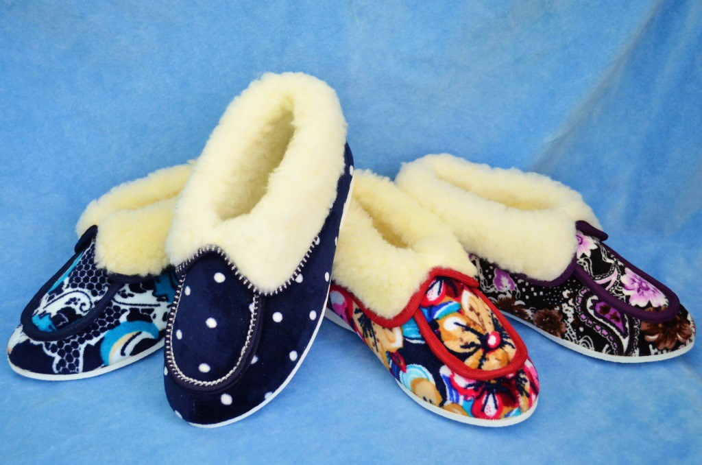
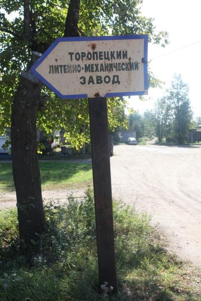

Торопец
Экономика
ООО «Обувь»

Литейно-механический завод

Торопецкий литейно-механический завод специализируется на производстве печного литья из серого чугуна СЧ-15. Продукция: чугунное печное литьё, плиты печные (цельные, под казан), дверки печные (топочные, поддувальные, прочистные), задвижки печные, колосники печные (для котлов, каминов), конфорки печные. В 1931-ом году торопецкие кузнечных дел мастера образовали артель «Красный металлист». В сентябре 1956 года артель была реорганизована в Торопецкий литейно-механический завод. С того времени и стало развиваться производство чугунного литья. Были освоены такие виды продукции, как изготовление люков канализационных, печных приборов, являющихся товарами народного потребления. С середины 80-х годов начинает развиваться кокильное литье. Приобретено и пущено в эксплуатацию кузнечно-прессовое, заготовительное, металлорежущее, литейное оборудование, обновлен станочный парк ремонтно-механического участка – фрезерные, токарные станки, сварочное оборудование. Мощность завода достигла трех тысяч тонн чугунного литья в год, численность работающих – 120 человек. Ежегодно осваивалось три-четыре вида новой продукции, которая поставлялась не только в различные регионы бывшего Советского Союза, но и за рубеж – на Кубу, в Монголию, в страны Африки. Завод пережил переход на рыночную экономику. На сегодняшний день работает стабильно и бесперебойно. По сравнению с предыдущими годами наблюдается рост объемов производства. Оборудование приводится в надлежащий порядок. Продукция завода – а это по-прежнему чугунные люки и печное литье, несмотря на жесткую конкуренцию, и сегодня пользуется спросом, что говорит о достаточно высоком качестве изделий. Поставки осуществляются в Тверскую область, в Псковскую, Москву и Санкт-Петербург. Ведется разработка и внедрение в производство новых образцов продукции.